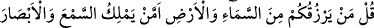
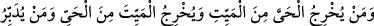
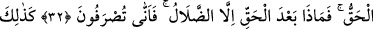
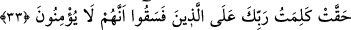

SAKINMIYOR MUSUNUZ?
31. De ki: “Sizi gökten ve yerden kim rızıklandırıyor? Ya da kulakların ve
gözlerin sâhibi kimdir? Ölüden diriyi, diriden ölüyü kim çıkarıyor? Bütün işleri kim
idâre ediyor?” Onlar “Allah” diyecekler. De ki: “O halde sakınmıyor musunuz?”
32. İşte sizin gerçek rabbiniz Allah budur. Gerçekten sonra sapıklıktan başka ne
var? Öyle ise (gerçekten) nasıl çevriliyorsunuz?
33. Böylece Rabb’inin, yoldan çıkanlar için söylediği “Onlar inanmazlar.” sözü
gerçekleşmiş oldu.
Tevhidin hak; şirkin bâtıl olduğuna delil olarak müşriklere “de ki: “Sizi” yağmur
yağdırarak “gökten ve” bitkiler bitirerek “yerden kim rızıklandırıyor?” size rızık
veren kimdir? “Ya da kulakların ve gözlerin sâhibi kimdir?” Yani onları böylesine
hayret verici bir fıtrat üzere yaratmaya ve düzgün kılmaya kim güç yetirebilir? Yâhut
bunlara ulaşan en ufak bir şeyden bile hemen etkilendikleri halde çok sayıdaki âfetten
bunları kim koruyabilir?
Hz. Ali (r.a.) şöyle derdi: “Yağı gördüren, kemiğe işittiren ve eti konuşturan Allah’ı
tesbih ederim, O ne yücedir!”
İnsanoğlunun işitmeye ve görmeye konuşmaya daha çok ihtiyacı olduğu için Allah
insanda iki göz, iki kulak ve bir dil yaratmıştır.
“Ölüden diriyi, diriden ölüyü kim çıkarıyor?” Yani nutfeden canlıyı, canlıdan nutfeyi
yaratan kimdir? Yine kuşu yumurtadan, yumurtayı da kuştan kim çıkarıyor? “Bütün
işleri” ulvî veya süflî, rûhânî veya cismânî bütün âlemlerin işlerini “kim idâre
ediyor?” Onlar:” hiç beklemeden, bütün bu zikredilenleri başkası değil “Allah”
yapıyor “diyecekler.” Çünkü son derece açık olan bu konuda inat etmeye imkan yoktur.
İşte o vakit onları susturmak için “de ki: “O halde sakınmıyor musunuz?” Bunu
biliyorsunuz da putları O’na ortak koşmanız yüzünden O’nun azâbından korkmuyor
musunuz?